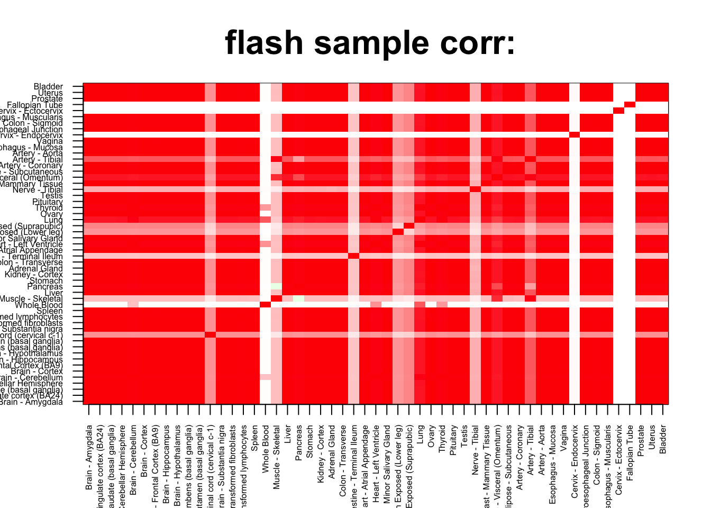
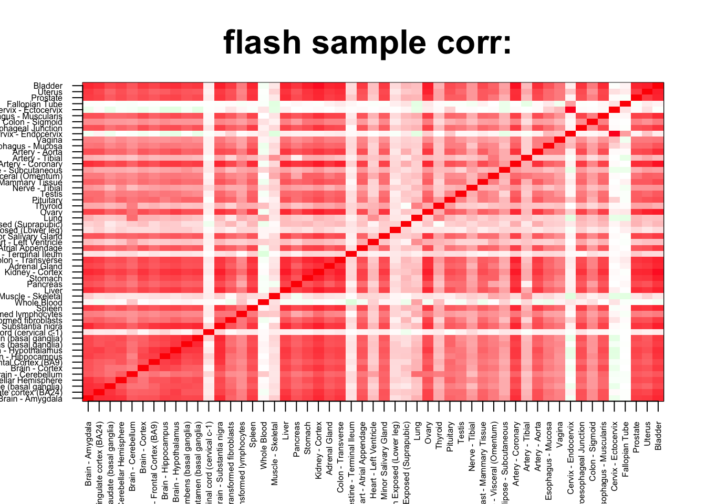
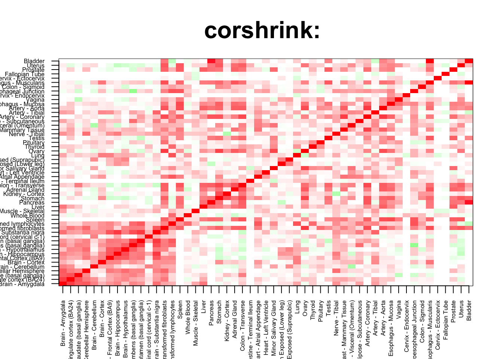

We check an example of FLASH imputation on a person by tissues data per gene. We shall see if FLASH imputation gives a better or equally accurate matrix as CorShrink.
gene <- "ENSG00000172867" ## update and rerun to see the plots for your geneperson_tissue_genes <- get(load("../output/person_tissue_genes_voom.rda"))gene_names <- as.character(read.table(file = "../data/GTEX_V6/gene_names_GTEX_V6.txt")[,1])
gene_names_1 <- as.character(sapply(gene_names, function(x) return(strsplit(x, "[.]")[[1]][1])))
person_label=read.table("../data/GTEX_V6/person_identifier_labels_with_numbers.txt");
samples_id <- read.table(file = "../data/GTEX_V6/samples_id.txt")[,1]
samples_person <- sapply(samples_id, function(x) return(paste0(strsplit(as.character(x), "-")[[1]][1:2], collapse ="-")))
tissue_labels <- read.table(file = "../data/GTEX_V6/samples_id.txt")[,3]
unique_persons <- unique(samples_person)
unique_tissues <- unique(tissue_labels)numg <- grep(gene, gene_names_1)
mat <- person_tissue_genes[,,numg]
mat2 <- apply(mat, 2, function(x) return(x - mean(x, na.rm= TRUE)))We now apply FLASH on this matrix
#devtools::install_github("stephenslab/flashr", auth_token = "a9de81f6166ea5ac0412326b2e2fa1b9bde8880f")
ggd = flashr::greedy(mat2,K = 10)save(ggd, file = paste0("../output/greedy_flash_", gene, ".rda"))ggd <- get(load(file = paste0("../output/greedy_flash_", gene, ".rda")))predicted_mat <- ggd$l %*% t(ggd$f) cov2cor(t(ggd$l)%*%ggd$l)## [,1] [,2] [,3] [,4]
## [1,] 1.00000000 -0.0405723759 -0.0929793487 -0.0725178238
## [2,] -0.04057238 1.0000000000 0.1144127989 0.0001698347
## [3,] -0.09297935 0.1144127989 1.0000000000 -0.0001717631
## [4,] -0.07251782 0.0001698347 -0.0001717631 1.0000000000flash_cov_mat <- (ggd$f) %*% t(ggd$f) + ggd$sigmae2*diag(1, 53)col=c(rev(rgb(seq(1,0,length=1000),1,seq(1,0,length=1000))),
rgb(1,seq(1,0,length=1000),seq(1,0,length=1000)))
image(as.matrix(cov2cor(flash_cov_mat[order_index, order_index])),
col=col, main=paste0("flash sample corr: "), cex.main=2,
xaxt = "n", yaxt = "n", zlim=c(-1,1))
axis(1, at = seq(0, 1, length.out = 53), labels = unique_tissues[order_index], las=2, cex.axis = 0.5)
axis(2, at = seq(0, 1, length.out = 53), labels = unique_tissues[order_index], las=2, cex.axis = 0.5)
mat2 <- mat
mat2[is.na(mat2)] = predicted_mat[is.na(mat2)]mat[1:5,1:5]## Adipose - Subcutaneous Adipose - Visceral (Omentum)
## GTEX-111CU 1.0865395 1.4454114
## GTEX-111FC -0.4910000 NA
## GTEX-111VG -0.3669399 NA
## GTEX-111YS 0.4528641 0.7971982
## GTEX-1122O -0.1770442 -1.6942174
## Adrenal Gland Artery - Aorta Artery - Coronary
## GTEX-111CU 1.1843655 NA NA
## GTEX-111FC NA NA NA
## GTEX-111VG NA NA NA
## GTEX-111YS 2.2161978 0.7341055 NA
## GTEX-1122O 0.7994254 -1.2754927 -0.1142739mat2[1:5,1:5]## Adipose - Subcutaneous Adipose - Visceral (Omentum)
## GTEX-111CU 1.0865395 1.445411419
## GTEX-111FC -0.4910000 0.009303904
## GTEX-111VG -0.3669399 0.004695263
## GTEX-111YS 0.4528641 0.797198244
## GTEX-1122O -0.1770442 -1.694217421
## Adrenal Gland Artery - Aorta Artery - Coronary
## GTEX-111CU 1.184365517 0.038897465 0.043558246
## GTEX-111FC 0.013262143 0.014521520 0.016263132
## GTEX-111VG 0.005597063 0.006978118 0.007815297
## GTEX-111YS 2.216197802 0.734105529 1.248783185
## GTEX-1122O 0.799425429 -1.275492706 -0.114273887predicted_mat[1:5,1:5]## [,1] [,2] [,3] [,4] [,5]
## [1,] 0.015775100 0.026093870 0.035418980 0.038897465 0.043558246
## [2,] 0.005927891 0.009303904 0.013262143 0.014521520 0.016263132
## [3,] 0.003013358 0.004695263 0.005597063 0.006978118 0.007815297
## [4,] 0.452138569 0.699390118 1.012669350 1.115386105 1.248783185
## [5,] 0.005907334 0.003599316 0.013342955 0.014718861 0.016452882cormat2 <- cor(mat2)
col=c(rev(rgb(seq(1,0,length=1000),1,seq(1,0,length=1000))),
rgb(1,seq(1,0,length=1000),seq(1,0,length=1000)))
image(as.matrix(cormat2[order_index, order_index]),
col=col, main=paste0("flash sample corr: "), cex.main=2,
xaxt = "n", yaxt = "n", zlim=c(-1,1))
axis(1, at = seq(0, 1, length.out = 53), labels = unique_tissues[order_index], las=2, cex.axis = 0.5)
axis(2, at = seq(0, 1, length.out = 53), labels = unique_tissues[order_index], las=2, cex.axis = 0.5)
We compare this with the CorShrink matrix.
ash_cor_result <- get(load("../output/ash_cor_only_voom_pearson_normal_gtex_tissues.rda"))col=c(rev(rgb(seq(1,0,length=1000),1,seq(1,0,length=1000))),
rgb(1,seq(1,0,length=1000),seq(1,0,length=1000)))
image(as.matrix(ash_cor_result[order_index, order_index, numg]),
col=col, main=paste0("corshrink: "), cex.main=2,
xaxt = "n", yaxt = "n", zlim=c(-1,1))
axis(1, at = seq(0, 1, length.out = 53), labels = unique_tissues[order_index], las=2, cex.axis = 0.5)
axis(2, at = seq(0, 1, length.out = 53), labels = unique_tissues[order_index], las=2, cex.axis = 0.5)
We now look at the corre
This R Markdown site was created with workflowr